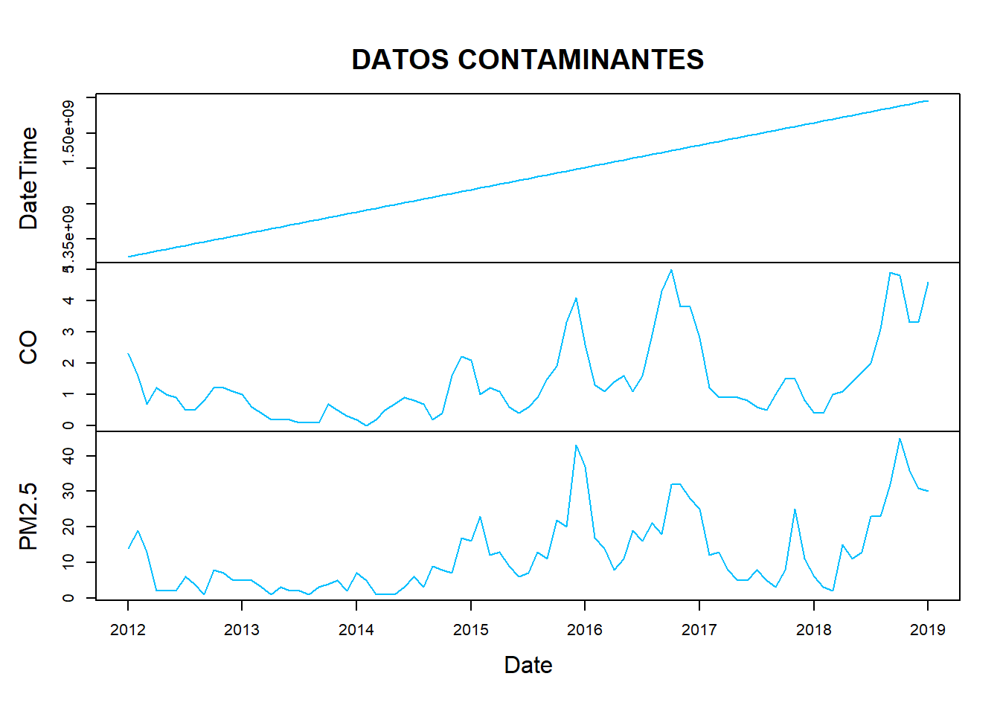

Chapter 3 SE CARGA LA BASE DE DATOS
library(readxl)
datos_CentroAltoRendimiento_RMCAB <- read_excel("C:/Users/ALVARO ARIZA/Desktop/Maestria Javeriana/SERIES DE TIEMPO/ACTIVIDAD 7/datos_CentroAltoRendimiento_RMCAB.xlsx",
col_types = c("date", "numeric", "numeric"))
View(datos_CentroAltoRendimiento_RMCAB)3.1 SE CONVIERTE A SERIES DE TIEMPO
## DateTime CO PM2.5
## Jan 2012 1325376000 2.3 14
## Feb 2012 1328054400 1.6 19
## Mar 2012 1330560000 0.7 13
## Apr 2012 1333238400 1.2 2
## May 2012 1335830400 1.0 2
## Jun 2012 1338508800 0.9 2
## Jul 2012 1341100800 0.5 6
## Aug 2012 1343779200 0.5 4
## Sep 2012 1346457600 0.8 1
## Oct 2012 1349049600 1.2 8
## Nov 2012 1351728000 1.2 7
## Dec 2012 1354320000 1.1 5
## Jan 2013 1356998400 1.0 5
## Feb 2013 1359676800 0.6 5
## Mar 2013 1362096000 0.4 3
## Apr 2013 1364774400 0.2 1
## May 2013 1367366400 0.2 3
## Jun 2013 1370044800 0.2 2
## Jul 2013 1372636800 0.1 2
## Aug 2013 1375315200 0.1 1
## Sep 2013 1377993600 0.1 3
## Oct 2013 1380585600 0.7 4
## Nov 2013 1383264000 0.5 5
## Dec 2013 1385856000 0.3 2
## Jan 2014 1388534400 0.2 7
## Feb 2014 1391212800 0.0 5
## Mar 2014 1393632000 0.2 1
## Apr 2014 1396310400 0.5 1
## May 2014 1398902400 0.7 1
## Jun 2014 1401580800 0.9 3
## Jul 2014 1404172800 0.8 6
## Aug 2014 1406851200 0.7 3
## Sep 2014 1409529600 0.2 9
## Oct 2014 1412121600 0.4 8
## Nov 2014 1414800000 1.6 7
## Dec 2014 1417392000 2.2 17
## Jan 2015 1420070400 2.1 16
## Feb 2015 1422748800 1.0 23
## Mar 2015 1425168000 1.2 12
## Apr 2015 1427846400 1.1 13
## May 2015 1430438400 0.6 9
## Jun 2015 1433116800 0.4 6
## Jul 2015 1435708800 0.6 7
## Aug 2015 1438387200 0.9 13
## Sep 2015 1441065600 1.5 11
## Oct 2015 1443657600 1.9 22
## Nov 2015 1446336000 3.3 20
## Dec 2015 1448928000 4.1 43
## Jan 2016 1451606400 2.6 37
## Feb 2016 1454284800 1.3 17
## Mar 2016 1456790400 1.1 14
## Apr 2016 1459468800 1.4 8
## May 2016 1462060800 1.6 11
## Jun 2016 1464739200 1.1 19
## Jul 2016 1467331200 1.6 16
## Aug 2016 1470009600 2.9 21
## Sep 2016 1472688000 4.3 18
## Oct 2016 1475280000 5.0 32
## Nov 2016 1477958400 3.8 32
## Dec 2016 1480550400 3.8 28
## Jan 2017 1483228800 2.8 25
## Feb 2017 1485907200 1.2 12
## Mar 2017 1488326400 0.9 13
## Apr 2017 1491004800 0.9 8
## May 2017 1493596800 0.9 5
## Jun 2017 1496275200 0.8 5
## Jul 2017 1498867200 0.6 8
## Aug 2017 1501545600 0.5 5
## Sep 2017 1504224000 1.0 3
## Oct 2017 1506816000 1.5 8
## Nov 2017 1509494400 1.5 25
## Dec 2017 1512086400 0.8 11
## Jan 2018 1514764800 0.4 6
## Feb 2018 1517443200 0.4 3
## Mar 2018 1519862400 1.0 2
## Apr 2018 1522540800 1.1 15
## May 2018 1525132800 1.4 11
## Jun 2018 1527811200 1.7 13
## Jul 2018 1530403200 2.0 23
## Aug 2018 1533081600 3.1 23
## Sep 2018 1535760000 4.9 32
## Oct 2018 1538352000 4.8 45
## Nov 2018 1541030400 3.3 36
## Dec 2018 1543622400 3.3 31
## Jan 2019 1546300800 4.6 30plot(Datos.ts, main=" ", ylab="Valor", col="deepskyblue", xlab="Date")
title(main = "DATOS CONTAMINANTES")

 ## Creamos gráficos estacionales de series de tiempo. Es una herramienta útil para visualizar patrones estacionales en datos: Estos patrones son tendencias repetitivas que ocurren durante períodos de tiempo específicos, como meses, trimestres o años.
## Creamos gráficos estacionales de series de tiempo. Es una herramienta útil para visualizar patrones estacionales en datos: Estos patrones son tendencias repetitivas que ocurren durante períodos de tiempo específicos, como meses, trimestres o años.

 ## Aplicamos ahora La función lag.plot se utiliza para crear un diagrama de rezagos, que es un tipo de gráfico de dispersión que muestra la relación entre una serie temporal y sus valores rezagados. Un rezago es un valor de la serie temporal en un período de tiempo anterior. Esta es una herramienta útil para analizar series temporales al identificar autocorrelación, seleccionar modelos de series temporales, detectar valores atípicos y evaluar la adecuación del modelo.
## Aplicamos ahora La función lag.plot se utiliza para crear un diagrama de rezagos, que es un tipo de gráfico de dispersión que muestra la relación entre una serie temporal y sus valores rezagados. Un rezago es un valor de la serie temporal en un período de tiempo anterior. Esta es una herramienta útil para analizar series temporales al identificar autocorrelación, seleccionar modelos de series temporales, detectar valores atípicos y evaluar la adecuación del modelo.